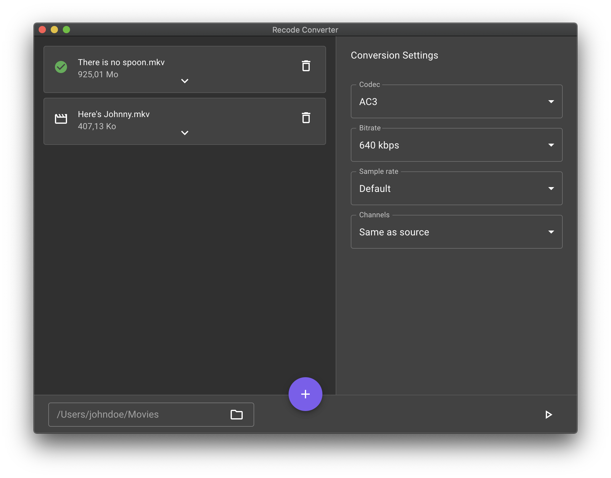
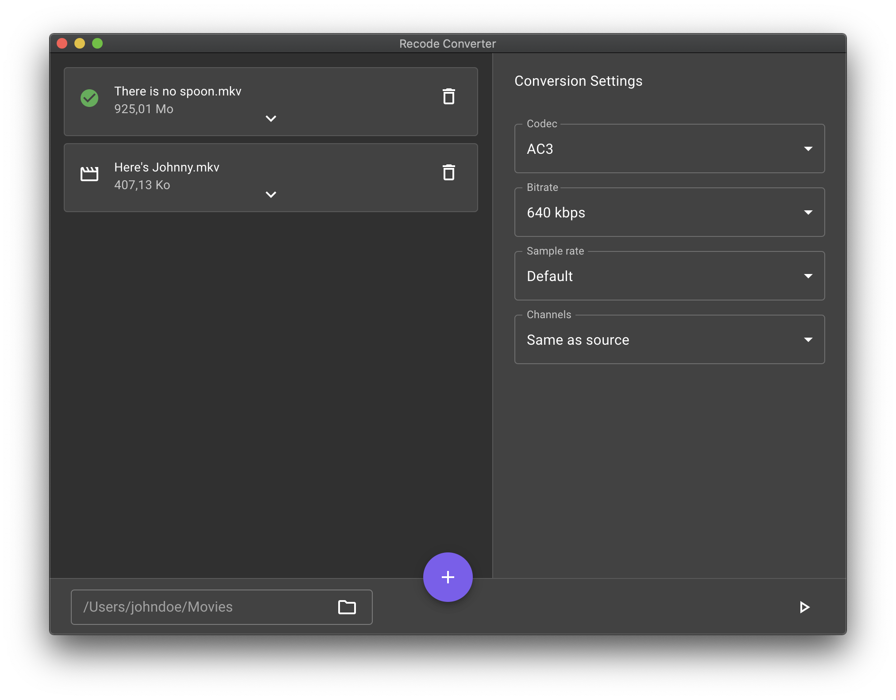

Recode Converter
A modern & simple audio converter for video files
FFMPEG needs to be installed first to use this app
Download More download options 
FFMPEG needs to be installed first to use this app
Download More download options 
Unfortunately, Recode Converter is not signed for now (it costs money 😔). This is why your OS warns you of the potential risks of installing an unsigned app. But don't worry, installing Recode Converter is completely safe if you download it from here or the GitHub repository.
Yes. Recode Converter is using FFMPEG to convert files but it's not installed when you install Recode Converter. You have to install FFMPEG before you use the app.
Currently the supported audio codecs are: AAC, AC3 and EAC3.
The supported OS are Windows and macOS. Linux is not supported yet but it's planned.
Yes, there is more to come! You can find details here.
Don't be shy and open an issue on GitHub to let me know what is not working or to suggest a new feature. If you are a developer you can also contribute by proposing changes with a pull request.
Of course! Help is always welcome. Recode Converter is completely open source. More details can be found on the GitHub repository.
No! Recode Converter app does not collect any personal information at all.